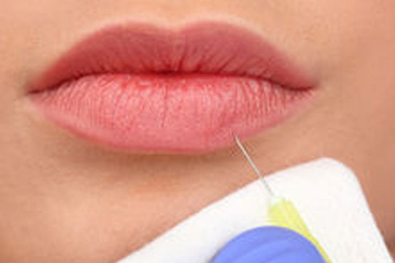
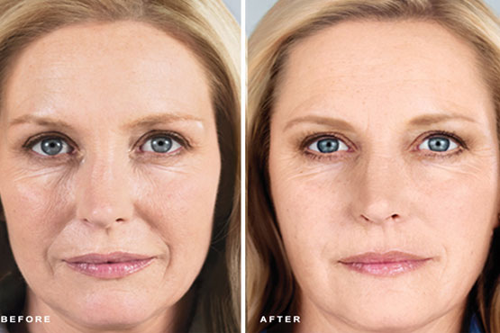
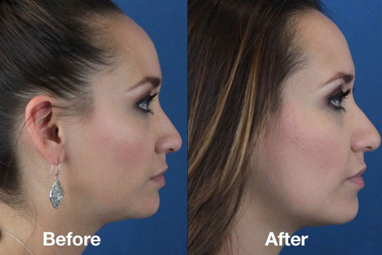
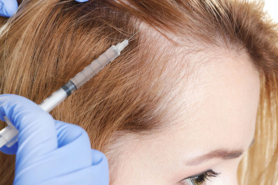

Botox / Dysport
- Botox is a prescription injection for temporary improvement in the look of moderate to severe frown lines between the eyebrows in adults less than 65 years old.
- The muscles in the treated area between the eyebrows, the forehead and "crows feet" contract and tighten, and can cause wrinkles. Botox blocks the nerve signal that causes these facial muscles to contract. This ultimately results in a localized reduction of muscle activity in the treated area and temporarily stops the tightening of these muscles.
- There is little to no down time with Botox after injection.
- Visible results may vary.
- As with any botulinum toxin product, you should wait at least 90 days in between treatments.
- Ask your provider about any precautions you should take after treatment.
- For more information contact our office or visit Allergan
Juvederm: Voluma, Vollure, Volbella
- What is Juvederm? Juvederm fillers are uniquely designed to give you volume where you need it. Smooth clear gel injected beneath the skin, made from a modified form of hyaluronic acid (HA), a naturally occurring sugar found in your body.
- Juvederm Voluma XC is used primarily for the cheeks and lines around the mouth
- Juvederm Volbella XC and Juvederm Ultra XC is used primarily for the lips
- Juvederm can last up to one year, but results may vary
- For more information contact our office or visit Juvederm

Restylane: Refyne, Defyne
- What is Restylane?
- Restylane is a clear gel formulation of hyaluronic acid that is specifically formulated to act like your body's own naturally produced hyaluronic acid, helping to visibly correct moderate to severe facial wrinkles and folds, including the lines that run from your nose toward the corners of your mouth (nasolabial folds) and the lines that run from the corners of your mouth toward the chin (marionette lines).
- Additionally, Restylane and Restylane Silk are FDA-approved for lip enhancement in patients over the age of 21 and are uniquely formulated to give your lips fullness and definition.
- Results may vary.
- Contact our office to find out if Restylane is right for you.
Sculptra
- Sculptra Aesthetic is an FDA-approved injectable that helps gradually replace lost collagen—the most common protein in the body that is used to form a framework to support cell and tissue—for results that can last more than two years.
- Sculptra Aesthetic is made with biocompatible, biodegradable, synthetic material called poly-L-lactic acid, which is gradually and naturally absorbed by the body and helps to rebuild lost collagen through a series of treatments administered by a trained specialist
- If you want to appear more youthful-looking — without appearing like you've had work done — then chances are Sculptra Aesthetic may be a good choice for you.

Kybella

- If your bothered, your not alone.
- Kybella is the first of its kind, a non-surgical option for the moderate to severe fullness under your chin.
- Kybella is an injectable that permanently destroys the fat cells in the treated area and improves the chin profile.
- How does Kybella work?
- Deoxycholic acid is a naturally occurring molecule that helps break down fat in the body. The active ingredient in Kybella is synthetic deoxycholic acid. Fat cells are broken down each time Kybella is injected into the treatment area beneath the chin. Over a period of time, those cells are cleared away through the natural process of the body, thus leaving you with a noticeable reduction of fullness under the chin. 4-6 Treatments are recommended for best results.
- Treatment is done in an office setting and requires little to no down time. Results may vary. Consult with your provider on the right treatment plan for you.
- Treatment is done in an office setting and requires little to no down time. Results may vary. Consult with your provider on the right treatment plan for you.
- For more information contact our office or visit Allergan
Microneedling
- Microneedling is used to treat and improve conditions like acne scarring, fine lines and wrinkles, loose skin, skin texture, pore size, brown spots, stretch marks, and pigment issues.
- It is also called skin needling, collagen induction therapy (CIT), and percutaneous collagen induction (PCI).
- Most anyone can have the procedure performed as long as they do not have any active infections, lesions, or any known wound healing problems. Microneedling is typically performed in a series of four to six sessions, spaced about a month apart.
- This is done in an office setting. Consult with your provider for the best treatment plan for you.
Micodermabrasion
- What to know about Microderabrasion:
- Microdermabrasion is a cosmetic procedure. It involves a skin care specialist removing the top layer of skin with a small hand-held device.
- Microdermabrasion can exfoliate the skin, reduce signs of aging, and make the skin appear more even. The procedure is safe for a person of any skin color.
- People can have treatments weekly, every 2 weeks, or monthly, depending on their skin type and the reason for treatment.
- Most people request microdermabrasion to rejuvenate the complexion of the face and neck, but a specialist can perform the procedure on any area of skin.
- The results are not permanent.
- Consult your provider to find out the right treatment plan for you.
Chemical Peels
- Chemical peels can be done on the face, neck, or hands. They can be used to:
- Reduce fine lines under the eyes and around the mouth
- Treat wrinkles caused by sun damage and aging
- Improve the appearance of mild scars
- Reduce age spots, freckles, and dark patches (melasma) due to pregnancy or taking birth control pills
- Improve the look and feel of skin.
- Chemical Peels are done in an office setting and require little to no down time.
- Contact our office to learn more.
Dermaplaning
- Dermaplaning is an exfoliating treatment that removes peach fuzz and dead skin with the tiny scrape of a scalpel.
- WHO IS Dermaplaning FOR?
- Dermaplaning is recommended for all skin types except those with acneic skin. If you have deep cystic acne, wait until breakouts are clear before trying this treatment. As always, also discuss any allergies or skin sensitivities before starting a treatment.
- This is a great treatment if you are pregnant or nursing and want exfoliation without the risk of harsh chemicals absorbing into the blood stream and potentially harming your baby.
- HOW IS Dermaplaning DONE?
- Dermaplaning is a painless procedure and can be compared to the sensation of shaving your legs, but in this case, it's on your face.
- Contact our office to learn more.
Hair PRP
- PRP (platelet-rich plasma) therapy for hair loss is a three-step medical treatment in which a person's blood is drawn, processed, and then injected into the scalp. PRP therapy is a simple office procedure with minimal downtime
- This exciting new technology has rapidly evolved over the past several years to become the preferred method of hair loss therapy.
- For hair restoration, PRP is injected directly into the scalp in areas of hair loss and is also done in conjunction with microneedling which places extremely small holes in the skin where the PRP can penetrate to the hair follicle base. In addition, PPR can also be placed using a microcannula to limit pain, bruising and swelling. The combination of microneedling with PRP provides a double stimulus for hair regrowth: both from the microneedling hair induction process and from the PRP growth factors.
- Contact our office to determine the right treatment plan for you.

Dermalfillers
Emsculpt
Copyright © 2020 | James Kadi M.D. Plastic Surgery. All rights reserved.